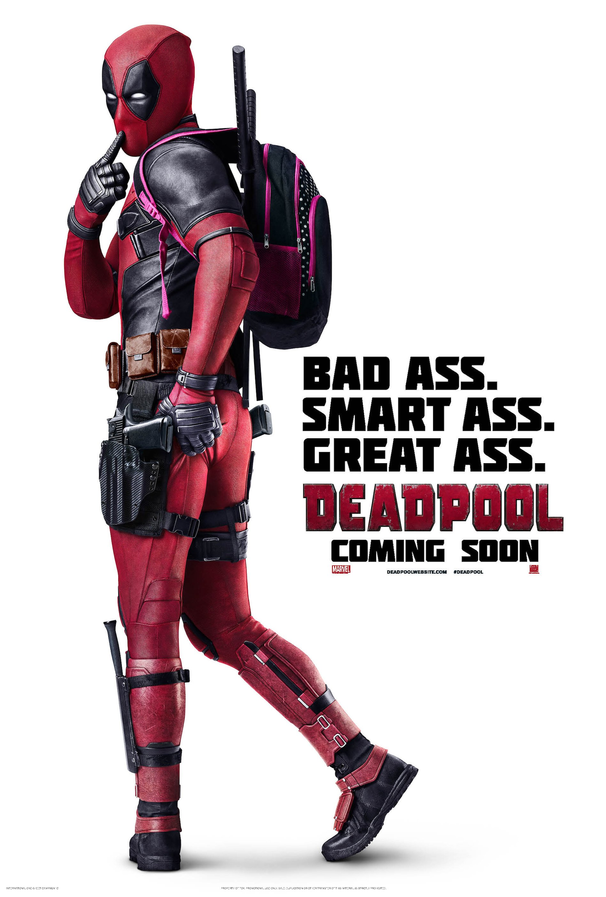
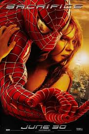
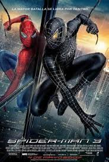

Listas desordenadas
Deadpool
-

Un exmercenario quien, tras haber sido sometido a un cruel experimento, adquiere el superpoder de sanar rápidamente y pretende vengarse del hombre que destrozó su vida.
-
Deadpool tiene que proteger a un mutante adolescente de Cable, un soldado del futuro genéticamente modificado, pero Deadpool no está solo: otros superhéroes igual de chiflados que él unen sus fuerzas contra el perverso Cable.
-

Deadpool viaja en el tiempo con la intención de reclutar a Wolverine en la batalla contra un enemigo común: Paradox.
Listas Ordenadas
Thor
-
Tras desatar una antigua guerra, el codicioso guerrero Thor es desterrado a la Tierra por su padre para que viva entre los hombres y descubra así el verdadero sentido de la humildad. Allí, sin sus poderes, Thor deberá enfrentarse a las fuerzas más oscuras que su mayor enemigo le enviará desde Asgard.
-

Malekith, un enemigo más antiguo que el universo, regresa a la Tierra para cumplir su plan destructor. Thor debe enfrentarse a un rival al que ni siquiera Odín parece poder detener y, desesperado, libera a su hermano Loki para que lo ayude.
-

Thor está preso en el otro extremo del universo. Necesita regresar a tiempo para evitar que la todopoderosa Hela destruya su mundo, pero para escapar de su confinamiento y evitar el apocalipsis tendrá que vencer antes al increíble Hulk en un torneo de gladiadores.
lista en orden y desorden
Spider-Man
-

Spider-Man, traducido en ocasiones como el Hombre Araña, es un superhéroe ficticio creado por los estadounidenses Stan Lee y Steve Ditko, e introducido en el cómic Amazing Fantasy n.° 15, publicado por Marvel Comics en agosto de 1962.
-

El atormentado Peter Parker lucha contra un científico siniestro que utiliza sus tentáculos mecánicos con fines destructivos.
-

Peter Parker sufre una terrible transformación cuando su traje de Hombre Araña se vuelve negro y libera una personalidad oscura y vengativa.
-

La investigación de Peter Parker para resolver la desaparición de sus padres lo coloca en el camino de un choque con el alter ego mortal de un científico conocido como el Lagarto.
-

Spider-Man mantiene una continua lucha interior entre sus obligaciones diarias como Peter Parker y sus extraordinarias responsabilidades como superhéroe. Ahora, además, deberá enfrentarse a un enemigo más poderoso que él: Electro.
-
Después de que otro incidente internacional, en el que se ven envueltos los Vengadores, produzca daños colaterales, la presión política obliga a poner en marcha un sistema para depurar responsabilidades.
-

Peter Parker asume su nueva identidad como Spider-Man y regresa a vivir con su tía después de su aventura con los Vengadores. Al volver, mientras sigue bajo la tutela de Tony Stark, descubre que ha surgido un nuevo y despiadado enemigo que pretende destruir todo lo que ama: el Buitre.
Tobey Maguire
Andrew Garfield
Tom Holland

Tras descubrirse la identidad secreta de Peter Parker como Spider-Man, la vida del joven se vuelve una locura. Peter le pide ayuda al Doctor Strange para recuperar su vida, pero algo sale mal y provoca una fractura en el multiverso.